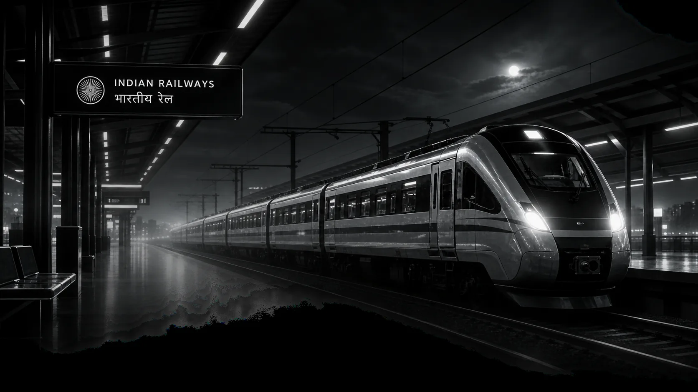

01
MONITORING
How often is my PNR checked?
The scheduler triggers the monitor once every hour. The PNR card's Last checked value shows the latest successful monitoring check.
Add a PNR once. We check it automatically every hour and email you when the reservation status changes.
Enter a 10-digit PNR and the email that should receive status alerts.
Every monitored journey is shown as a live boarding pass.
See actual reservation status changes across your monitored journeys. Routine hourly checks that do not change the status are shown by each PNR’s “Last checked” time, not repeated here.

Your PNR stays monitored until a terminal journey point is reached. The system checks the latest reservation status every hour, updates the record, stores status history, sends the relevant email, and then stops automatically after confirmation, chart preparation, or the journey date.
Practical answers about monitoring, email alerts, status history, and when a journey leaves active monitoring.
The scheduler triggers the monitor once every hour. The PNR card's Last checked value shows the latest successful monitoring check.
You receive an email when a real reservation status movement is detected. Routine hourly checks with no status change do not generate repeated emails.
Monitoring completes after confirmation, chart preparation, or when the journey date is reached. You can also stop a PNR manually at any time.
The dashboard supports up to 10 active PNRs. Stopped or completed journeys no longer count toward the active limit.
The route is read from the live PNR provider response and shown with the station name and code on the boarding pass.
Use Prem Kumar's portfolio contact page for questions, feedback, collaboration, or technical support.
Open contact page →